Le logiciel ComTrafic dispose d'une API REST fournissant certaines fonctionnalités et interactions avec la base de donnée à partir des commandes et des paramètres. Dans ce document, on présente le code et les étapes de la consommation de l'API ComTrafic par l'interface web. L'API ComtTrafic peut fournir une réponse sous plusieurs formats (JSON, XML, CSV), on s'intéresse dans cette documentation au format JSON.
L'interface web est supportée par Flask, un framework de Python, on utilise donc le module requests de Python pour se connecter à l'API au backend pour faire des traitements puis fournir les éléments nécessaires au frontend de l'interface en JSON. Le module requests est déjà installé en installant les dépendances du projet.
On va étudier dans cette documentation le cas des pages Communications et Tableau de bord. On va s'intéresser juste au code qui permet l'interfaçage avec l'API.
Le premier fichier qui concerne la connexion à l'API dans l'application Flask est le fichier __init__.py qui se trouve dans le module routes, il fournit le URL de l'API, son port et sont état pour les fichiers des codes des pages, il fournit aussi la période complète dont on peut extraire les communications.
La fonction de l'état de l'API sert à vérifier que l'API est disponible, elle fait un test de connexion qui est considéré échoué si il prend plus d'une seconde. Le test prend juste des millisecondes si il n'y a aucun problème dans le cas d'une connexion réussie.
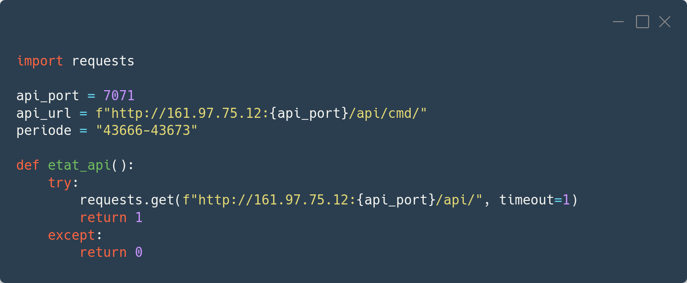Après que l'application reçoit une requête pour servir la page communication, c'est la fonction communications qui s'occupe de cette requête, elle envoie juste la page statique de l'interface contenant le code HTML, CSS et JS et l'état de l'API. Dans ce cas on envoie aussi la liste des postes et des services codé en dur sur la backend pour charger leurs listes déroulantes corréspondantes, car on a pas encore une solution optimale pour les fournir.
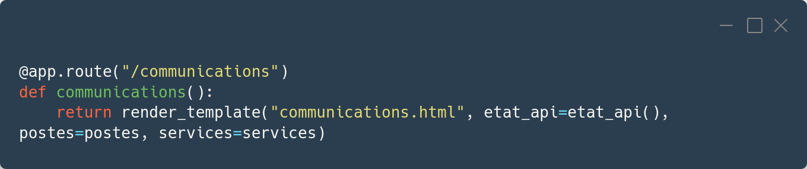Quand la page communications.html est servie, tous les éléments qui attendent d'être chargés par des données sont en état de chargement. Une requête AJAX est donc envoyé au serveur pour alimenter le tableau et puis faire les calculs des coûts et des durées. Le calcul des coûts et des durées et fait en frontend dans ce cas car le plugin du tableau Tabulator fournit déjà des utilités dans ce sens.
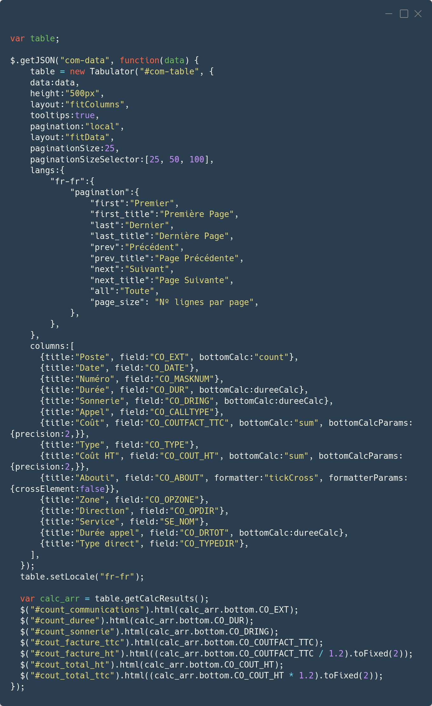La fonction qui reçoit la requête envoyée en AJAX est com_data. C'est cette même fonction qui est utilisé pour recevoir les requêtes de recherche, donc elle peut aussi reçevoir des paramêtres qu'elle envoie avec l'URL de l'API pour filtrer la réponse.
On convertit la réponse reçu en JSON valide pour le traitement en Python, puit on change le format des durées et on retourne une réponse en JSON. Lorsque le client reçoit la réponse, le tableau est chargé par les données et des calculs sont fait à partir de ses données pour alimenter les éléments des coûts et des durées.
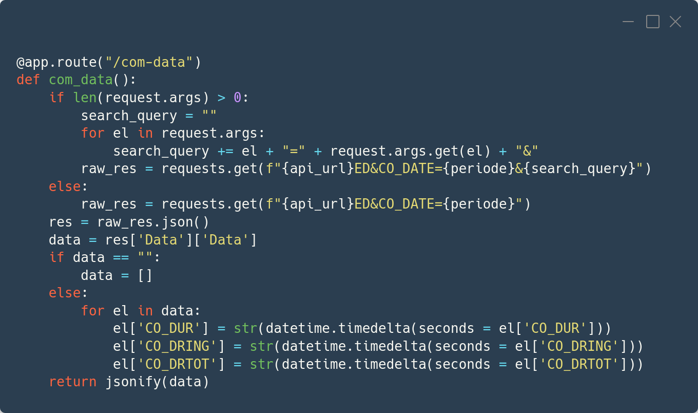Une fois la page et les données sont chargés, on a pas besoin de recharger la page à chaque fois une fait uen recherche, la recherche se fait via AJAX et les données du tableau et des autres éléments sont mis à jours.
Quand on ajoute des filtres et on clique sur le botton de recherche, tous les éléments qui doivent être à jour en fonction de la recherche sont mis en état de chargement. Puis on extrait les filtres ajoutés, on les reformule et on les ajoute à la requête AJAX qui va être traitée par la fonction com_data en backend, et lorsque la réponse est réçu on recharge le tableau avec les nouvelles données et on refait les calculs.
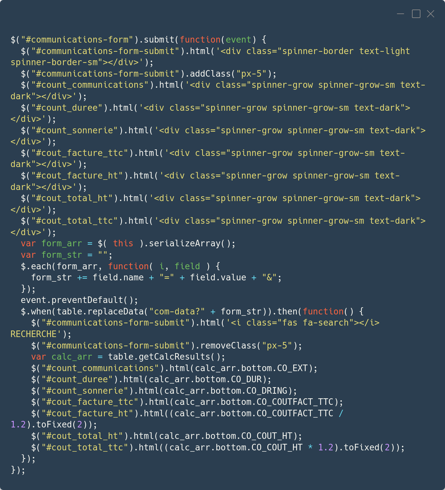Le processus d'interfaçage avec l'API est le même pour toute les pages:
On va aussi voir le cas de la page Tableau de bord car elle contient des cas particuliers ( multiples requêtes AJAX, graphiques ).
Tout d'abord, la page statique est servie avec l'état de l'API.
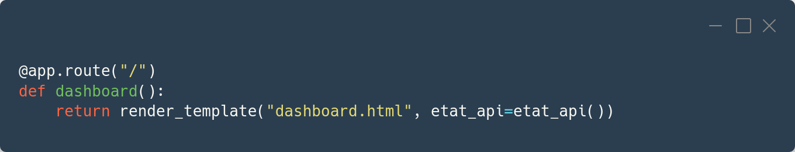Puis une requête AJAX est envoyée depuis le client pour charger la section Informations sur la base de donnée.
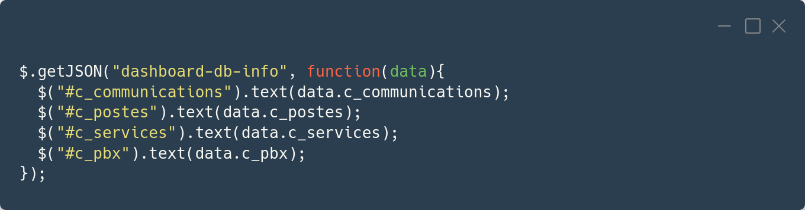Cette requête est donc reçu par la fonction dashboard_db_info au backend. dashboard_db_info envoie de son tour une requête à l'API, puis on extrait les informations souhaités et on retourne une reponse en JSON.
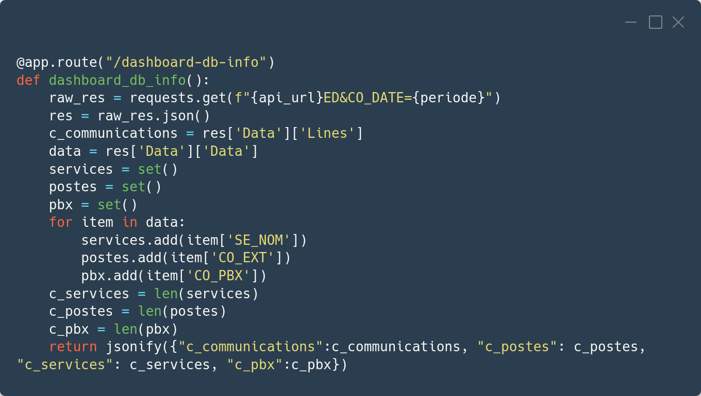Au moment où une requête AJAX est envoyée pour charger les informations sur la base de donnée, une autre requête est envoyée pour recevoir les données du tableau et des graphiques.
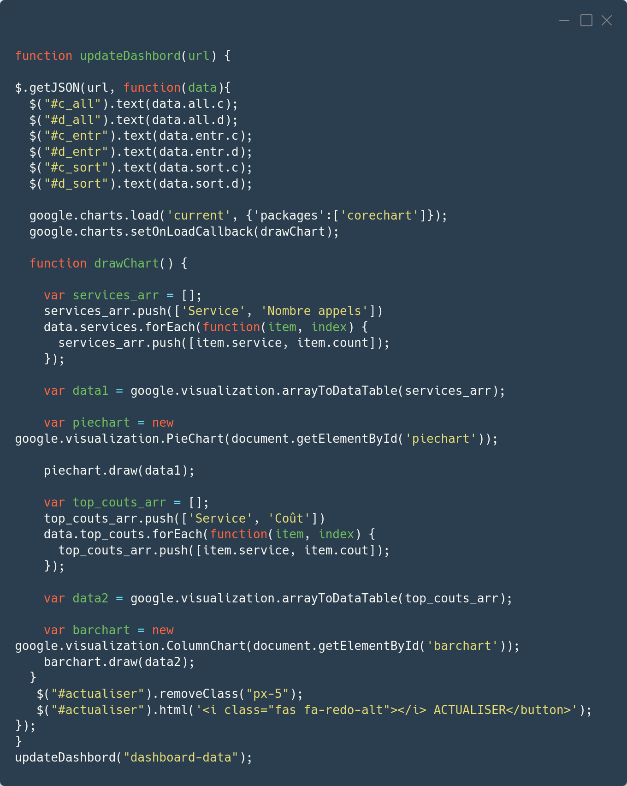Cette seconde requête est reçue par la fonction dashboard_data. On fait les traitements et les calculs necessaires sur la réponse de l'API puis en retourne les données du tableau et des graphiques en JSON.
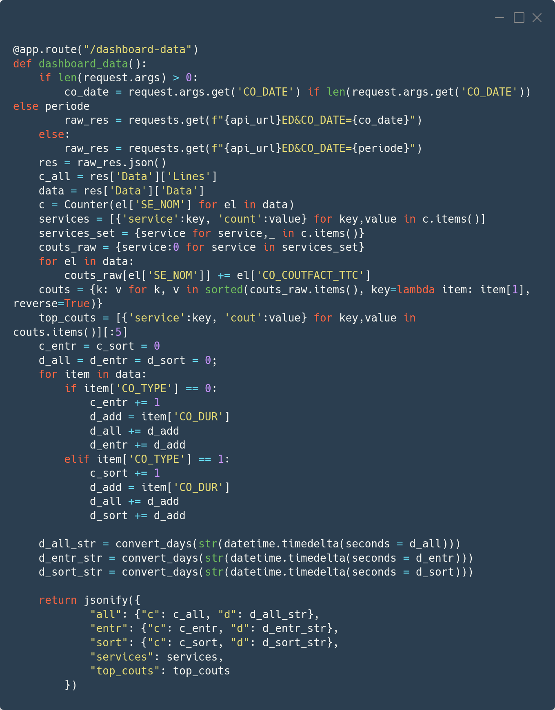Une fois la page et les données sont chargés, on peut actualiser le tableau et les graphiques selon une plage de date en choisissant la plage de date souhaité et en cliquant sur le botton Actualiser. Le tableau et les graphiques sont mis donc en état de chargement en attendant la réponse, la requête est reçue par la même fonction dashboard_data, elle joint les paramêtres reçus avec l'URL et lance une requête à l'API et traite la réponse reçue de la même façon que la première fois.
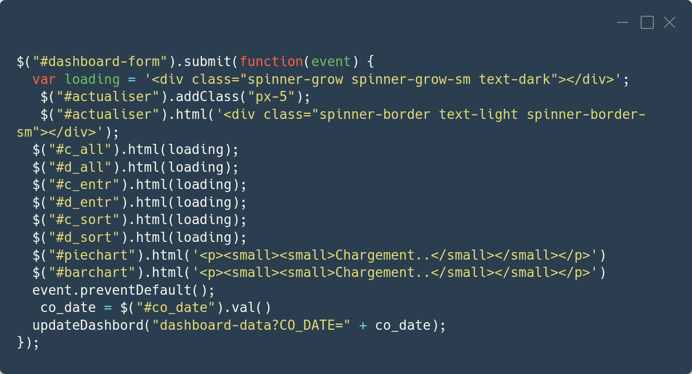